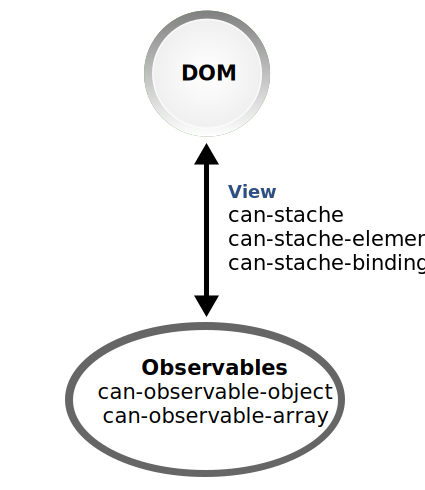
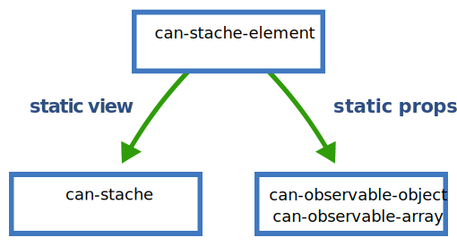
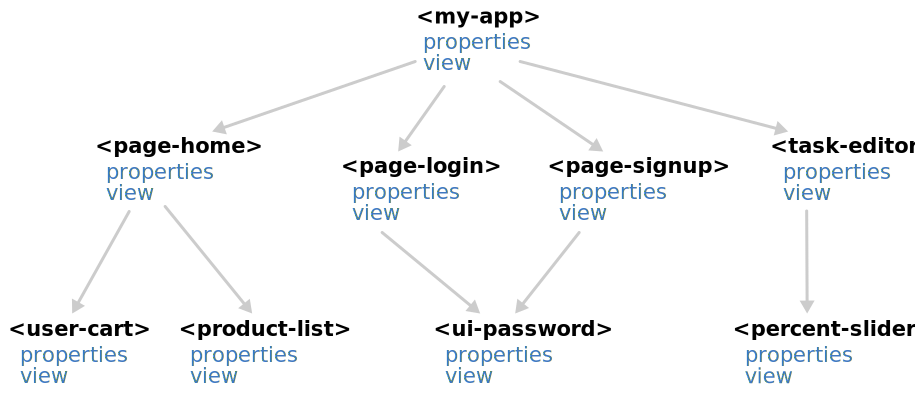

HTML
Learn how to update HTML and listen to user interactions.
Overview
In a web application, one of the most common needs is to listen to user interactions and then update the page.
Let's say you want to create a page that counts clicks like the following: (click the +1 button):
With native HTML (DOM) APIs, you might implement this widget like:
<div id="my-counter"></div>
<script type="module">
// Get the counter element.
const counter = document.getElementById("my-counter");
// Store the state of the widget.
let count = 0;
// Initialize the HTML within the widget.
counter.innerHTML = `
Count: <span>0</span>
<button>+1</button>
`;
// Listen to when the +1 is clicked.
counter.querySelector("button").addEventListener("click", function(){
// Update the HTML.
counter.querySelector("span").textContent = (++count)
})
</script>
This implementation uses addEventListener() to listen to user interactions (clicks) and
.innerHTML and .textContent to update the page. CanJS removes the need to
call these native DOM APIs directly, reducing the amount of code you have to write. But more importantly,
CanJS will improve this code in other ways:
- It will manage state better.
- It will be easier to test.
- Multiple counter widgets can be created easily.
In CanJS, widgets are encapsulated with custom elements. Custom elements allow us to put an
element in our HTML like <my-counter></my-counter>, and the widget will spring to life.
StacheElement is used to create custom elements.
The following implementation uses StacheElement to create the counter functionality above. This implementation:
- Includes a
<my-counter>element in the page's HTML. - Defines a
<my-counter>StacheElement.
<!-- Adds the custom element to the page -->
<my-counter></my-counter>
<script type="module">
import { StacheElement } from "can";
// Extend Component to define a custom element
class MyCounter extends StacheElement {
static view = `
Count: <span>{{ this.count }}</span>
<button on:click='this.increment()'>+1</button>
`;
static props = {
count: 0
};
increment() {
this.count++;
}
}
customElements.define("my-counter", MyCounter);
</script>
You might have noticed that StacheElement custom elements are mostly 2 parts:
- A stache view that specifies the HTML content within the custom element. In this case, we’re adding a
<span>and a<button>within the<my-counter>element. - An observable props that manages the logic and state of the application.
These work together to receive input from the user, update the state of the application, and then update the HTML the user sees accordingly.
StacheElement uses can-stache to update the HTML and can-stache-bindings to listen to user interactions and pass data between custom elements. The remainder of this guide breaks down these pieces and goes into more detail about how StacheElement works and how to use it.
Stache templates and bindings
can-stache is used to create HTML that updates automatically when observable state changes. It uses magic tags to read values and perform simple logic. The following are the most commonly used tags:
- {{expression}} - Inserts the result of
expressionin the page.Count: <span>{{ this.count }}</span> - if - Render the block content if the expression evaluates
to a truthy value; otherwise, render the inverse content.
{{# if(this.count) }} Count not 0 {{ else }} Count is 0 {{/ if }} - {{#is(expressions)}} - Render the block content if all comma seperated expressions
evaluate to the same value; otherwise, render the inverse content.
{{# is(this.count, 1) }} Count is 1 {{ else }} Count is not 1 {{/ if }} - for(of) - Render the block content for each item in the list the expression evaluates to.
{{# for(item of this.items) }} {{ item.name }} {{/ for }}
can-stache-bindings are used to pass values between the DOM and observables and call methods on observables. Use it to:
- Call methods on observables when DOM events happen. The following uses
on:event to call
doSomethingwith the<input>’s value on akeyupevent:<my-demo></my-demo> <script type="module"> import { StacheElement } from "can"; class MyDemo extends StacheElement { static view = ` <input on:keyup="this.doSomething(scope.element.value)"/> `; static props = {}; doSomething(value) { console.log("You wrote " + value); } } customElements.define("my-demo", MyDemo); </script>
- Update observables with element attribute and property values. The following uses key:to
to send the
<input>’s value to the props’scountproperty when the user changes the value of the<input>.<my-demo></my-demo> <script type="module"> import { StacheElement, type } from "can"; class MyDemo extends StacheElement { static view = ` <input value:to="this.count"/> Count: {{ this.count }} `; static props = { count: type.convert(Number) }; } customElements.define("my-demo", MyDemo); </script>
- Update element attribute and property values with observable values. The following uses key:from
to update the
<input>’s value from the props’scountproperty.<my-demo></my-demo> <script type="module"> import { StacheElement } from "can"; class MyDemo extends StacheElement { static view = ` <input value:from="count"/> `; static props = { count: { // Makes count increase by 1 every // second. value(prop) { let count = prop.resolve(0); let timer = setInterval( () => { prop.resolve(++count); },1000); // Return a cleanup function // that is called when count // is longer used. return () => { clearTimeout(timer); }; } } }; } customElements.define("my-demo", MyDemo); </script>
The following demo:
- Loops through a list of todos with for(of) -
{{# for(todo of todos) }} ... {{/ for }}. - Writes out if all todos are complete with eq -
{{# eq(completeCount, todos.length) }}. - Updates the
completestate of a todo when a checkbox is checked and vice-versa with key:bind -checked:bind='complete'. - Completes every todo with on:event -
on:click='completeAll()'.
Components
The final core view library is can-stache-element.

can-stache-element is used to create customs elements. Custom elements are used to
encapsulate widgets or application logic. For example, you
might use can-stache-element to create a <percent-slider> element that creates a
slider widget on the page:
Or, you might use can-stache-element to make a <task-editor> that uses <percent-slider>
and manages the application logic around editing a todo:
A can-stache-element is a combination of:
- a ObservableObject observable,
- a can-stache view.
For example, the following demo defines and uses a <my-counter> custom element. Hit the button
to see it count.
The demo defines the <my-counter> element with:
- The
Counterobservable constructor as shown in the Key-Value Observables section of the Technology Overview:import { ObservableObject } from "can"; class Counter extends ObservableObject { static props = { count: 0 }; increment() { this.count++; } }; - The can-stache view that incremented the counter as shown in the beginning of this guide:
import { stache } from "can"; const view = stache(` <button on:click='this.increment()'>+1</button> Count: <span>{{ this.count }}</span> `); - A can-stache-element that combines the
Counterandviewas follows:import { StacheElement } from "can"; class MyCounter extends StacheElement { static view = ` <button on:click="this.increment()">+1</button> Count: <span>{{ this.count }}</span> `; static props = { count: 0 }; increment() { this.count++; } } customElements.define("my-counter", MyCounter);
The demo then creates a <my-counter> element like:
<my-counter></my-counter>
So components are just a combination of a view created with can-stache and observable props similar to a can-observable-object.

can-stache-element will create a can-stache template from a string view value and define a ObservableObject type from a plain object props value.
Passing data to and from components
Components are created by calling customeElements.define with the can-stache-element. For example, <my-counter></my-counter> creates an instance of the
ObservableObject and renders it with the view and inserts the resulting HTML inside the <my-counter> tag.
can-stache-bindings can be used to pass values between components and can-stache’s scope. For example, we can start the counter's count at 5 with the following:
<my-counter count:from='5'></my-counter>
This is shown in the following demo:
can-stache’s scope is usually made up of other component properties. can-stache-bindings
passes values from one component to another. For example, the <task-editor> component
connects its progress property to the value property of the <my-slider> with:
<percent-slider value:bind='progress'/>
So on a high-level, CanJS applications are composed of components whose logic is managed by observable properties and whose views create other components. The following might be the topology of an example application:

Notice that <my-app>’s view will
render either <page-login>, <page-signup>,
<page-products>, or <page-purchase> based on
the state of its properties. Those page-level components
might use sub-components themselves like <ui-password> or <product-list>.